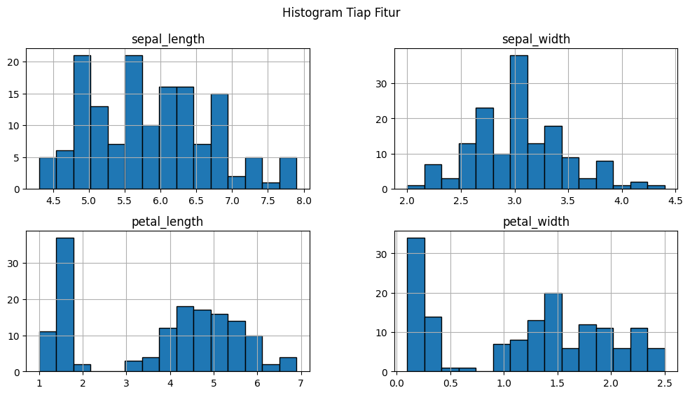
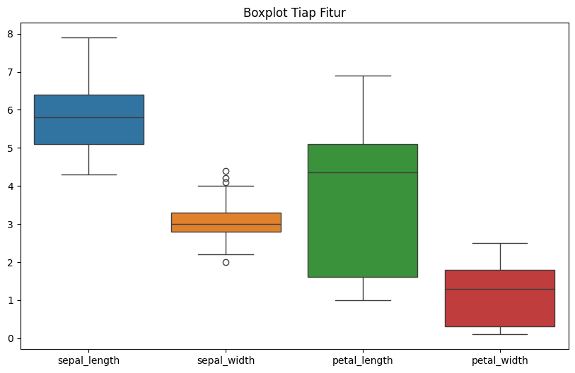
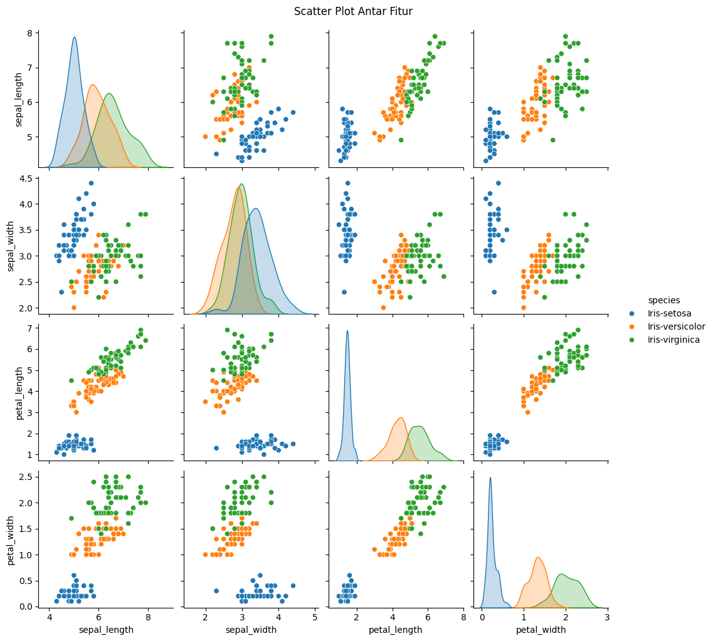

Eksplorasi Data#
Bagian ini berfokus pada implementasi praktis dari Exploratory Data Analysis (EDA) menggunakan dataset Iris sebagai studi kasus.
Persiapan Dataset#
Menggunakan dataset Iris untuk demonstrasi eksplorasi data.
import pandas as pd
import numpy as np
import matplotlib.pyplot as plt
from scipy import stats
iris_data = pd.read_csv("IRIS.csv")
pd.set_option('display.max_rows', None)
pd.set_option('display.max_columns', None)
display(iris_data.head(10))
#display(iris_data.tail(10))
#display(iris_data)
| sepal_length | sepal_width | petal_length | petal_width | species | |
|---|---|---|---|---|---|
| 0 | 5.1 | 3.5 | 1.4 | 0.2 | Iris-setosa |
| 1 | 4.9 | 3.0 | 1.4 | 0.2 | Iris-setosa |
| 2 | 4.7 | 3.2 | 1.3 | 0.2 | Iris-setosa |
| 3 | 4.6 | 3.1 | 1.5 | 0.2 | Iris-setosa |
| 4 | 5.0 | 3.6 | 1.4 | 0.2 | Iris-setosa |
| 5 | 5.4 | 3.9 | 1.7 | 0.4 | Iris-setosa |
| 6 | 4.6 | 3.4 | 1.4 | 0.3 | Iris-setosa |
| 7 | 5.0 | 3.4 | 1.5 | 0.2 | Iris-setosa |
| 8 | 4.4 | 2.9 | 1.4 | 0.2 | Iris-setosa |
| 9 | 4.9 | 3.1 | 1.5 | 0.1 | Iris-setosa |
menampilkan tipe data setiap fitur#
print("Info dataset: \n")
def tipe_data(dtype):
if dtype in ['int64', 'float64']:
return 'Numerik'
elif dtype == 'bool':
return 'Boolean'
elif dtype == 'object':
return 'Kategorikal'
else:
return str(dtype) # untuk tipe lain
for col in iris_data.columns:
print(f"{col}: {tipe_data(iris_data[col].dtype)}")
Info dataset:
sepal_length: Numerik
sepal_width: Numerik
petal_length: Numerik
petal_width: Numerik
species: Kategorikal
print("\nStatistik Deskriptif:")
display(iris_data.describe())
# Select only numerical columns for descriptive statistics
numerical_cols = iris_data.select_dtypes(include=np.number).columns
Statistik Deskriptif:
| sepal_length | sepal_width | petal_length | petal_width | |
|---|---|---|---|---|
| count | 150.000000 | 150.000000 | 150.000000 | 150.000000 |
| mean | 5.843333 | 3.054000 | 3.758667 | 1.198667 |
| std | 0.828066 | 0.433594 | 1.764420 | 0.763161 |
| min | 4.300000 | 2.000000 | 1.000000 | 0.100000 |
| 25% | 5.100000 | 2.800000 | 1.600000 | 0.300000 |
| 50% | 5.800000 | 3.000000 | 4.350000 | 1.300000 |
| 75% | 6.400000 | 3.300000 | 5.100000 | 1.800000 |
| max | 7.900000 | 4.400000 | 6.900000 | 2.500000 |
for col in numerical_cols:
mean_val = iris_data[col].mean()
median_val = iris_data[col].median()
mode_val = iris_data[col].mode()[0]
min_val = iris_data[col].min()
max_val = iris_data[col].max()
q1 = iris_data[col].quantile(0.25)
q2 = iris_data[col].quantile(0.50)
q3 = iris_data[col].quantile(0.75)
print(f"Fitur {col}:")
print(f"- Rata-rata = {mean_val:.2f}")
print(f"- Median (Q2) = {median_val:.2f}")
print(f"- Modus = {mode_val:.2f}")
print(f"- Minimum = {min_val:.2f}")
print(f"- Q1 (25%) = {q1:.2f}")
print(f"- Q2 (50%) = {q2:.2f}")
print(f"- Q3 (75%) = {q3:.2f}")
print(f"- Maximum = {max_val:.2f}")
print("")
Fitur sepal_length:
- Rata-rata = 5.84
- Median (Q2) = 5.80
- Modus = 5.00
- Minimum = 4.30
- Q1 (25%) = 5.10
- Q2 (50%) = 5.80
- Q3 (75%) = 6.40
- Maximum = 7.90
Fitur sepal_width:
- Rata-rata = 3.05
- Median (Q2) = 3.00
- Modus = 3.00
- Minimum = 2.00
- Q1 (25%) = 2.80
- Q2 (50%) = 3.00
- Q3 (75%) = 3.30
- Maximum = 4.40
Fitur petal_length:
- Rata-rata = 3.76
- Median (Q2) = 4.35
- Modus = 1.50
- Minimum = 1.00
- Q1 (25%) = 1.60
- Q2 (50%) = 4.35
- Q3 (75%) = 5.10
- Maximum = 6.90
Fitur petal_width:
- Rata-rata = 1.20
- Median (Q2) = 1.30
- Modus = 0.20
- Minimum = 0.10
- Q1 (25%) = 0.30
- Q2 (50%) = 1.30
- Q3 (75%) = 1.80
- Maximum = 2.50
Histogram untuk tiap fitur#
iris_data.hist(bins=15, figsize=(12,6), edgecolor='black')
plt.suptitle("Histogram Tiap Fitur")
plt.show()

Boxplot untuk tiap fitur#
import seaborn as sns
plt.figure(figsize=(10,6))
sns.boxplot(data=iris_data.select_dtypes(include=np.number))
plt.title("Boxplot Tiap Fitur")
plt.show()

Scatter plot antara fitur#
sns.pairplot(iris_data, hue='species')
plt.suptitle("Scatter Plot Antar Fitur", y=1.02)
plt.show()

1. Analisis Univariat Mendalam#
Kita akan melihat distribusi setiap fitur secara individu menggunakan KDE (Kernel Density Estimate) dan menghitung statistik bentuk distribusi (Skewness & Kurtosis).
# Menampilkan KDE Plot untuk setiap fitur numerik
plt.figure(figsize=(15, 10))
for i, col in enumerate(numerical_cols, 1):
plt.subplot(2, 2, i)
sns.histplot(iris_data[col], kde=True, color="skyblue")
plt.title(f"Distribusi {col}")
skew = iris_data[col].skew()
kurt = iris_data[col].kurt()
print(f"{col} -> Skewness: {skew:.2f}, Kurtosis: {kurt:.2f}")
plt.tight_layout()
plt.show()
Observasi Univariat:
Sepal Width mendekati distribusi normal (skewness dekat 0).
Petal Length dan Petal Width menunjukkan distribusi bimodal (dua puncak), yang mengindikasikan adanya pemisahan alami antar kelompok data (spesies).
2. Analisis Bivariat (Fitur vs Spesies)#
Melihat bagaimana fitur-fitur ini membedakan spesies satu dengan yang lain menggunakan Violin Plot.
plt.figure(figsize=(15, 10))
for i, col in enumerate(numerical_cols, 1):
plt.subplot(2, 2, i)
sns.violinplot(x="species", y=col, data=iris_data)
plt.title(f"{col} per Spesies")
plt.tight_layout()
plt.show()
Observasi Bivariat:
Iris-setosa sangat mudah dibedakan karena memiliki Petal Length dan Petal Width yang jauh lebih kecil dibanding spesies lain.
Iris-versicolor dan Iris-virginica memiliki beberapa tumpang tindih (overlap) pada fitur Sepal, namun lebih terpisah pada fitur Petal.
3. Analisis Multivariat (Korelasi)#
Melihat hubungan linear antar fitur numerik menggunakan Heatmap.
plt.figure(figsize=(8, 6))
# Menghitung korelasi (hanya fitur numerik)
correlation_matrix = iris_data[numerical_cols].corr()
sns.heatmap(correlation_matrix, annot=True, cmap="coolwarm", fmt=".2f")
plt.title("Heatmap Korelasi Fitur Iris")
plt.show()
Observasi Multivariat:
Terapat korelasi positif yang sangat kuat antara Petal Length dan Petal Width (0.96).
Petal Length juga berkorelasi kuat dengan Sepal Length (0.87).
Hal ini menunjukkan bahwa dimensi petal adalah faktor pembeda utama dalam dataset ini.